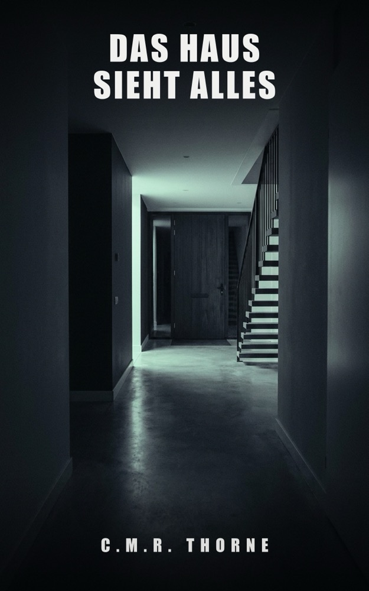

LOWLANDSPRESS
LOWLANDSPRESS

Das Haus sieht alles
Ein Psychothriller
Die Haustür öffnete sich um 3:12 Uhr. Während er schlief.
Wo erhältlich
Acht Monate nach dem tödlichen Sturz seiner Frau versucht Daniel Vos, sich über Wasser zu halten. Dann schickt ihm die Versicherung die Smart-Home-Daten jener Nacht. Eine Zeile stimmt nicht: Die Haustür öffnete sich um 3:12 Uhr. Während er schlief. Während Marit am Fuß der Treppe lag.
Die Polizei nimmt den Fall wieder auf – und Daniel ist der erste Verdächtige. Jede Schicht, die er abträgt, legt eine neue Lüge frei: Marit war nicht die, für die sie sich ausgab. Und jemand in der vertrauten Nachbarschaft wusste das längst.
Das Haus zeichnete alles auf. Aber wer die Protokolle löschen kann, kann auch warten – und schaut schon viel länger zu, als Daniel ahnt.
Produktdetails
- Verlag
- Lowlands Press
- Sprache
- Deutsch
- Erschienen
- 2026-07-10
- Seiten (Hardcover)
- 332
- Wörter
- 85.296
- ASIN (E-Book)
- B0H8FT79DZ
- ASIN (Taschenbuch)
- B0H8FGMS4L
- ASIN (Hardcover)
- B0HHTHTV74
- ISBN (Taschenbuch)
- 979-8186716969
- ISBN (Hardcover)
- 979-8171955885
Der Anfang
Der Anfang des Buches, dieselben Seiten, die ein Shop zum Hineinlesen zeigt. Weiterlesen bei den Händlern oben.
Prolog
Das Haus schlief nicht.
Häuser schlafen nie, nicht mehr. Irgendwo im Technikschrank blinkte ein grünes Lämpchen, geduldig wie ein Herzschlag. Der Sensor über der Hintertür zählte Grade. Das Thermostat im Flur schrieb jede Minute eine Zeile in ein Logbuch, das niemand je las. Das Haus registrierte alles und urteilte über nichts, und vielleicht war das das Problem.
Um 2:41 Uhr kam Bewegung in den oberen Flur.
Nackte Füße auf dem Treppenläufer. Eine Hand, die das Geländer suchte und fand. Unten, in der Küche, ging kurz eine Lampe an – zwanzig Prozent, Nachtmodus – und wieder aus. Ein Telefon leuchtete auf. Daumen über einem Display, ein Zögern von elf Sekunden, dann vier Wörter und eine Sendetaste.
Das Haus notierte: Küchenlampe aus, 02:44.
Um 2:53 Uhr registrierte der Sensor der Hintertür eine Störung.
Das Haus kannte den Unterschied zwischen Zufall und Absicht nicht. Es notierte die Störung, wie es alles notierte, ohne Fragezeichen.
Was danach geschah, im Flur unten an der Treppe, dauerte vierzehn Minuten.
Es gab Geräusche, aber kein Mikrofon, das sie hörte. Es gab zwei Stimmen, die flüsterten, und dann eine Stimme, die das nicht mehr tat. Es gab eine Bewegung, die der Sensor im Flur als Anwesenheit registrierte, und dann einen Sturz, den das Haus als nichts registrierte, denn für Stürze gibt es keinen Sensor. Es gab jemanden, der auf der vierten Stufe saß, die Ellbogen auf den Knien, und zusah.
Neun Minuten lang.
Der Flursensor schrieb es brav auf: Bewegung, Bewegung, Bewegung. Kleine Bewegungen, dicht am Boden. Immer kleiner. Das Haus wusste nicht, dass es einem Ende zusah. Das Haus wusste nur: Hier ist jemand. Und dann, um 3:07 Uhr: Hier ist niemand mehr, der sich bewegt.
Um 3:09 Uhr wurde im Technikschrank etwas gelöscht. Auch das notierte das Haus – nicht hier, sondern woanders, weit weg, auf einem Server in einem anderen Land. Häuser erinnern sich heute an zwei Orten. Das wusste fast niemand.
Dann war es still.
Drei Minuten lang war das Haus allein mit dem, was unten an der Treppe lag, und mit dem grünen Lämpchen im Technikschrank, und mit dem Thermostat, das um 3:10 Uhr einfach seine Zeile schrieb: 18,5 Grad, alles in Ordnung.
Um 3:12 Uhr ging die Haustür auf.
Kapitel 1
Acht Monate nach dem Tod seiner Frau saß Daniël Vos einem Mann gegenüber, der sein Haus besser kannte als er.
„Sie haben ein SmartCasa-System“, sagte der Mann. Er hieß Theo Maes, er kam im Auftrag des Versicherers, und er hatte eine Aussprache, durch die man Flandern hörte wie Kies unter einer Tür. „Installiert 2016, im letzten Jahr noch erweitert. Achtunddreißig Sensoren, zwei smarte Schlösser, ein Hub im Technikschrank.“
„Wenn Sie es sagen.“
„Ich sage es nicht. Ihr Haus sagt es.“
Sie saßen in der Küche. Daniël hatte Kaffee gekocht, weil man Kaffee kocht für Besuch, auch für Besuch, den man nicht will. Maes hatte seine Tasse nicht angerührt. Er hatte eine Ledermappe dabei, so eine Mappe, wie Leute sie mitbringen, wenn man auf die Mappe schauen soll statt in ihr Gesicht.
„Herr Vos, ich muss Ihnen ein paar Fragen stellen über die Nacht vom vierzehnten auf den fünfzehnten März.“
„Diese Fragen sind gestellt worden. Von der Polizei. Zweimal.“
„Ich weiß.“
„Meine Frau ist die Treppe hinuntergefallen. Sie hatte Schlafmedikamente genommen, es war dunkel, sie ist gestürzt. So steht es im Bericht. Der Fall ist geschlossen.“
„Ich weiß“, sagte Maes wieder, in genau demselben Ton, und das war der Moment, in dem Daniël zum ersten Mal etwas Kaltes im Nacken spürte. Menschen, die zweimal ich weiß sagen, wissen meistens etwas anderes.
Maes schlug die Mappe auf.
„Bei einer Auszahlung dieser Größenordnung führt die Gesellschaft standardmäßig eine Überprüfung durch. Teil davon ist eine Datenanfrage beim Hersteller Ihres Smart-Home-Systems. SmartCasa bewahrt eine Kopie aller Events in der eigenen Cloud auf. Wussten Sie das?“
„Nein.“
„Die meisten Leute nicht.“ Maes drehte ein Blatt Papier um und schob es über den Tisch. „Das ist die Nacht vom vierzehnten auf den fünfzehnten März. Jede Zeile ist ein Ereignis in Ihrem Haus.“
Daniël sah nicht auf das Blatt. Noch nicht. „Wonach suchen Sie, Herr Maes?“
„Nach nichts. Das ist mein Beruf: nachsehen, ob nichts da ist.“ Er tippte mit einem Finger auf das Blatt, zweimal, leise. „Nur – da ist etwas.“
Das Blatt war eine Tabelle. Uhrzeiten links, Ereignisse rechts, die Schrift eines Systems, das nie müde wird. Daniëls Augen glitten die Zeilen entlang, wie man an einem Abgrund entlanggeht: so dicht an der Kante wie möglich, ohne hinunterzusehen.
02:41 – Bewegung, oberer Flur.
02:44 – Küchenlampe aus.
Marit. Das war Marit, ihre letzte Runde durchs Haus, und Daniël musste kurz warten, bis seine Kehle wieder mitmachte. Acht Monate, und es steckte immer noch in Dingen wie einer Tabelle.
„Ich habe geschlafen“, sagte er. „Ich hatte Zolpidem genommen. Auch das steht im Bericht.“
„Das steht da, ja.“ Maes beugte sich etwas vor. „Sehen Sie sich einmal 3:12 Uhr an.“
Daniël sah hin.
03:12 – Haustür geöffnet.
Er las es noch einmal. Und noch einmal. Die Zeile blieb einfach stehen, geduldig, wie nur Maschinen geduldig sind.
„Das stimmt nicht“, sagte er.
„Das dachte ich auch.“
„Nein, Sie verstehen nicht. Das kann nicht stimmen. In dieser Nacht war niemand da. Ich schlief oben, Marit – meine Frau lag im Flur, meine Tochter schlief. Die Polizei hat das Schloss geprüft, kein Einbruch, da war niemand.“ Er hörte die eigene Stimme schneller werden und konnte es nicht aufhalten. „Um sieben Uhr zwanzig habe ich sie gefunden. Die Haustür war verriegelt. Ich weiß es, weil ich sie selbst aufgemacht habe, für den Krankenwagen.“
„Um 3:12 Uhr geht die Haustür auf“, sagte Maes. „Um 3:14 Uhr geht sie wieder zu und wird verriegelt. Ohne Gewalt – wie genau, das steht in den Detaildaten. Darauf komme ich noch zurück.“
„Dann ist Ihre Tabelle kaputt.“
„Kann sein.“ Maes lehnte sich zurück. Zum ersten Mal nahm er seinen Kaffee, trank einen Schluck, stellte die Tasse zurück auf genau denselben Ring. „Nur gibt es noch etwas, Herr Vos. Etwas, das mich mehr stört als diese Haustür.“
Daniël wartete. Draußen fuhr ein Auto in die Straße, wurde langsamer, fuhr weiter. Das Geräusch von De Weidevenne, so einem Neubauviertel, in dem alle langsam am Leben der anderen vorbeifahren.
„Wir haben diese Daten aus der Cloud des Herstellers“, sagte Maes. „Die Polizei hat damals den Hub in Ihrem Technikschrank ausgelesen. Ich habe diesen Bericht angefordert und beides nebeneinandergelegt.“ Er legte ein zweites Blatt neben das erste. „Das sagt Ihr Hub über dieselbe Nacht.“
Die zweite Tabelle war kürzer.
Viel kürzer.
„Der Hub hat zwischen 2:44 Uhr und 7:21 Uhr kein einziges Ereignis“, sagte Maes. „Keine Bewegung im Flur. Keine Störung. Keine Haustür. Wenn es nach dem Kasten in Ihrem Technikschrank geht, ist in dieser Nacht überhaupt nichts passiert.“ Er sah Daniël an, und seine Stimme wurde sehr ruhig, beinahe freundlich. „Eine Kopie muss dem Original gleichen. Wenn das Original leerer ist als die Kopie, dann hat jemand das Original sauber gemacht. Das macht eine Treppe nicht von selbst, Herr Vos.“
„Was wollen Sie damit sagen?“
„Dass in dieser Nacht jemand in diesem Haus war.“ Maes nahm seinen Stift. „Und dass sich jemand sehr viel Mühe gegeben hat, das zu löschen.“